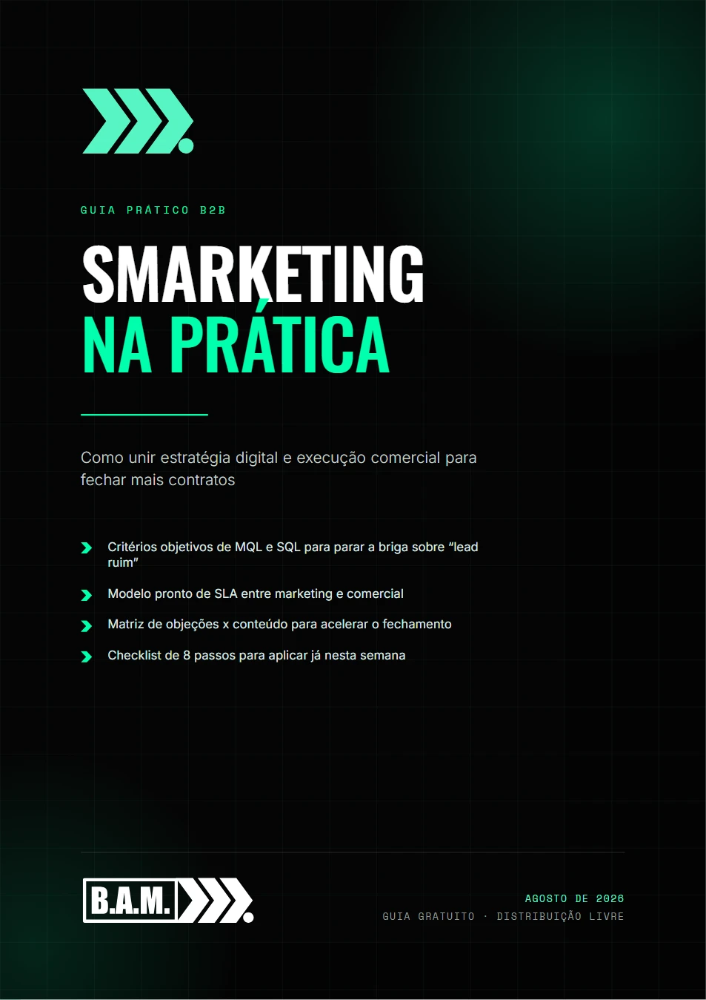

O abismo entre marketing e comercial
Os cinco sintomas de uma operação desalinhada e onde o custo desse atrito aparece — mesmo sem linha no relatório.
É o retrato mais comum das operações B2B que crescem rápido: uma área medida por volume de leads, outra por receita fechada — e dois times remando em direções distintas dentro da mesma empresa. Smarketing na Prática mostra como transformar isso em um único funil de receita, com critérios, acordos e rotinas prontos para adaptar ao seu tamanho.

PDF · 15 páginas · Gratuito
Seu guia está liberado. O arquivo abre no computador e no celular.
Baixar o PDF ↓ Prefere conversar? Chamar no WhatsApp →Nada de teoria solta: cada capítulo termina em um critério, um modelo de acordo ou uma rotina que dá para levar para a próxima reunião.
Os cinco sintomas de uma operação desalinhada e onde o custo desse atrito aparece — mesmo sem linha no relatório.
Como escrever a definição de MQL e SQL que as duas áreas assinam embaixo, e quais filtros elevam a qualidade sem matar o volume.
Modelo de acordo pronto: volume de MQLs, tempo até o primeiro contato, tentativas mínimas e motivos de perda padronizados.
O CRM como fonte única da verdade, a pauta da reunião semanal e o fluxo de nutrição para quem não fechou agora.
A matriz de objeções x conteúdo: qual material responde a qual objeção, e em que momento da negociação usar.
Oito passos aplicáveis sem ferramenta nova e sem reestruturar o time — para sair do diagnóstico e começar.
Preencha o formulário e o PDF é liberado na hora, sem confirmação por e-mail e sem espera.
Receber o guia ↑© 2026 BAM Assessoria em Marketing · Material gratuito